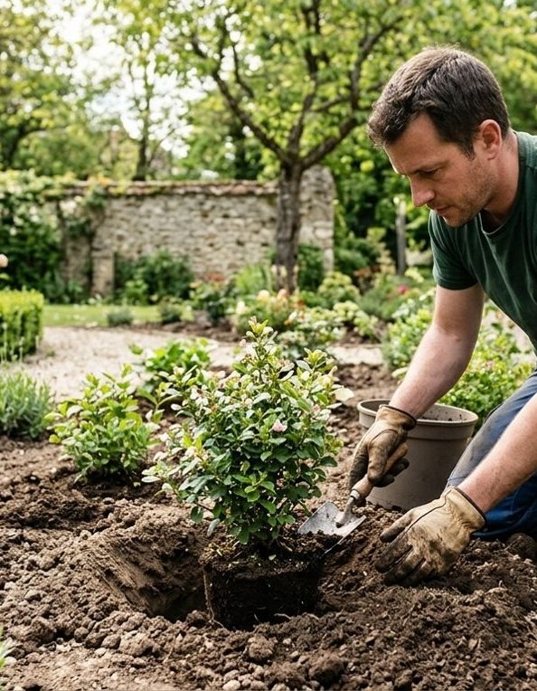
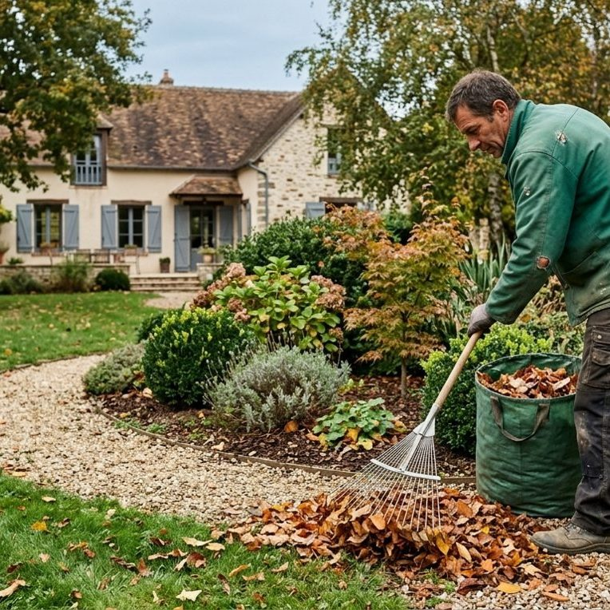

Création de jardins
Massifs, pelouses et allées : l'aménagement se pense selon votre terrain.
En savoir plus
Paysagiste à Verneuil-sur-Seine (78)
Les Jardins d'Helena aménagent et entretiennent vos jardins à Verneuil-sur-Seine et aux alentours.
Nos prestations
Du projet de jardin à son entretien régulier.
Massifs, pelouses et allées : l'aménagement se pense selon votre terrain.
En savoir plus

À propos
Les Jardins d'Helena est une entreprise d'aménagement paysager installée à Verneuil-sur-Seine, dans les Yvelines.
Contactez-nous pour parler de votre jardin et demander un devis.
Nicolas Ramon, dirigeant

Appelez-nous pour décrire votre projet et demander un devis.
Création et entretien de jardins à Verneuil-sur-Seine (78).
© Les Jardins d'Helena · Maquette de démonstration